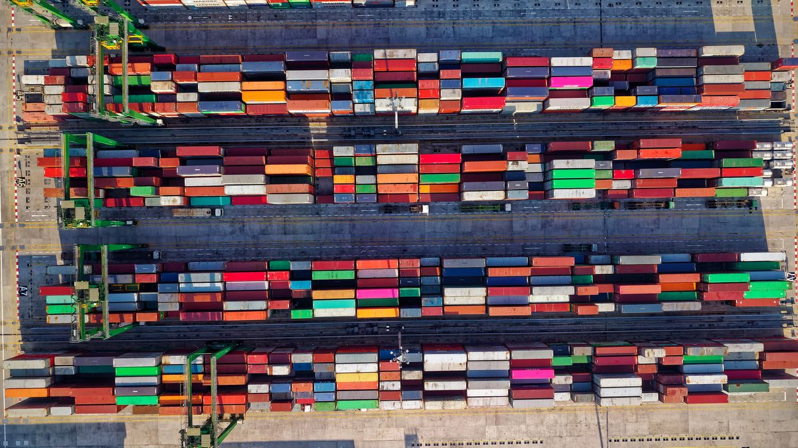
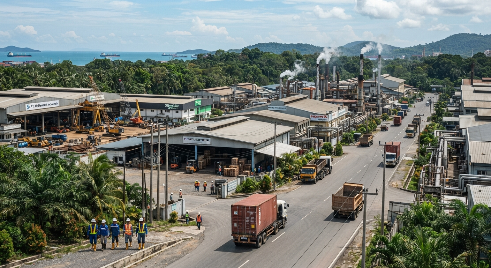
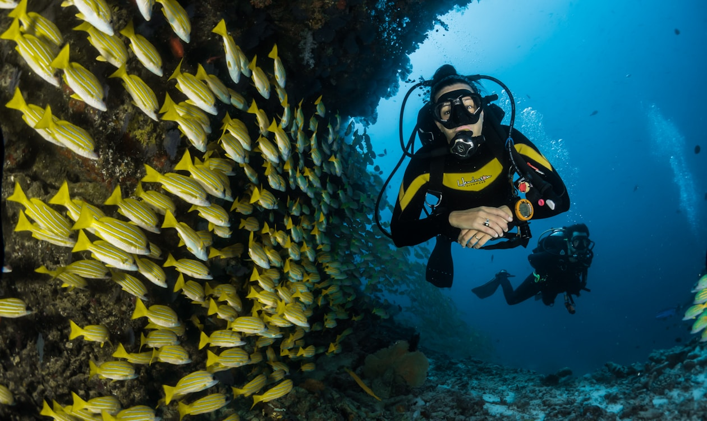
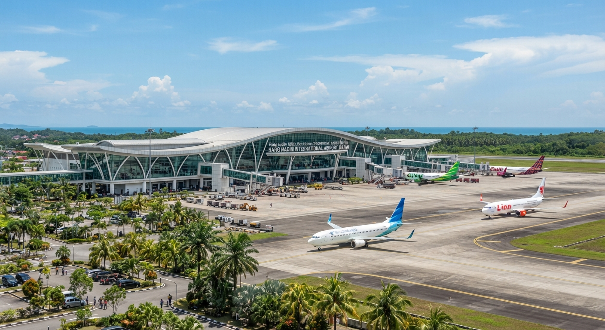

Invest in Batam — Indonesia's Strategic SEZ
Tax holidays up to 20 years, zero import duties, and world-class infrastructure in a Special Economic Zone.
Special Economic Zone
KEK Batam — Investor Incentives
Batam is a designated Kawasan Ekonomi Khusus (Special Economic Zone) with fiscal and non-fiscal incentives.
Tax Holidays
Corporate income tax exemption 5–20 years for pioneer industries. Import duty exemption on capital goods.
Streamlined Licensing
One-stop integrated service (PTSP) for investment permits. Online single submission (OSS) system.
Customs Privileges
Bonded zone benefits — deferred VAT, excise exemption, simplified export/import procedures.
Infrastructure Ready
10+ industrial estates, Batam International Container Terminal, Hang Nadim Airport expansion, 5G rollout.
Why Invest
Why Invest in Batam
Batam offers a rare combination of world-class infrastructure, aggressive tax incentives, and strategic proximity to the world's busiest shipping lane.

World-Class Port Infrastructure
Batam International Container Terminal (BICT) handles 1.3+ million TEU annually, with direct shipping to 100+ global destinations. Deep-water berths accommodate Post-Panamax vessels, positioning Batam as a preferred transhipment hub in the Strait of Malacca.

Proven Industrial Ecosystem
Over 1,200 foreign companies operate across 7 industrial estates, including BIFZA, Batam Eco Industrial Park, and Nongsa Digital Park. Electronics, maritime, and petrochemical clusters provide ready supplier networks, cutting setup time vs greenfield sites.

Strategic Geographic Location
Just 20 km (45-minute ferry) from Singapore, Batam sits on the edge of the Strait of Malacca — one of the worlds busiest shipping lanes. Investors enjoy instant access to Singapores financial, legal, and logistics ecosystem while operating at 20-30% of Singapore costs.

Cost Advantage That Compounds
Industrial land at US$30–80 per sqm, labor at US$300–500/month, 0% corporate tax for 5–20 years.
Key Sectors
Priority Investment Sectors
Electronics & Semiconductors
Established supply chains, skilled workforce, proximity to Singapore's tech ecosystem.
Shipbuilding & Maritime
World-class dry docks, ship repair yards, offshore fabrication. Strategic Malacca Strait location.
Petrochemicals & Energy
Integrated industrial parks with gas supply, storage terminals, and refinery access.
Digital Economy
Data center parks, submarine cable landing, fintech sandbox, smart city pilot projects.
Logistics & Warehousing
Free trade zone, bonded warehousing, cold chain facilities, e-commerce fulfillment hubs.
Tourism & Healthcare
Medical tourism, integrated resorts, retirement communities — leveraging Singapore demand.
SIJORI Corridor
The SIJORI Growth Triangle Advantage
Batam sits at the heart of the Sijori Growth Triangle — a trilateral economic zone uniting Singapore, Johor (Malaysia), and the Riau Islands (Indonesia) into a single integrated production base of 20 million people.
Trilateral Production Network
Companies leverage each country's strengths — Singapore's R&D and finance, Johor's land and manufacturing scale, and Batam's tax-free zone and deep-water logistics. This creates a seamless value chain that no single country can replicate alone.
Seamless Cross-Border Connectivity
Dedicated ferry services connect Batam to Singapore (45 min) and Johor (60 min). The upcoming Batam–Bintan bridge and expanded airport terminal will create a unified logistics corridor moving goods and talent freely across all three jurisdictions.
Combined Market of 20 Million
The SIJORI corridor combines Singapore's 5.9 million high-income consumers, Johor's 3.8 million manufacturing workforce, and the Riau Islands' 2.4 million people — plus spillover demand from the broader ASEAN market of 680 million.
Investor-Friendly Framework
The Tripartite Business Council streamlines cross-border regulations, harmonizes standards, and provides dispute resolution mechanisms. Investors benefit from special customs fast-lanes, mutual recognition of qualifications, and joint infrastructure investment programs.
Compare
Batam vs Regional Alternatives
| Batam (KEK) | Bintan | Johor Bahru | Singapore | |
|---|---|---|---|---|
| Industrial Land (USD/sqm) | 30–80 | 50–120 | 80–200 | 500+ |
| Corporate Tax (Pioneer) | 0% (5–20 yr) | Standard | Standard | 17% |
| Import Duty (Capital Goods) | Exempt | Partial | Partial | 0% |
| Visa-Free Entry (Business) | 30 days | 30 days | 30 days | 30–90 days |
| Singapore Access | 45 min ferry | 60 min ferry | 1 hr drive | — |
| Labour Cost (Monthly) | USD 300–500 | USD 350–550 | USD 400–700 | USD 3,000+ |
Market Entry
Market Study Visits for Investors
We arrange end-to-end investment exploration trips — you focus on decisions, we handle logistics.
Site Inspections
Pre-screened industrial land, factory shells, and commercial plots matched to your requirements.
Government Briefings
Meet BP Batam officials, BKPM coordinators, and KEK regulators for licensing clarity.
Factory & Partner Visits
Tour operating facilities in your sector. Meet potential JV partners, suppliers, distributors.
Talent & HR Landscape
Visit training centers, universities, and industrial parks. Understand hiring costs and availability.
Legal & Compliance
Connect with local law firms, tax advisors, and IP specialists for entity setup guidance.
Executive Accommodation
Premium resort stays, private transfers, and curated networking dinners with industry leaders.
Track Record
Who's Already Here
Electronics
Panasonic, Samsung, Flex, Jabil, Celestica, Sanmina
Maritime
Keppel O&M, Sembcorp Marine, PT PAL, Damen Shipyards
Petrochemicals
Chevron, Pertamina, Chandra Asri, Polyplastics
Logistics
DP World, PSA International, DHL, DB Schenker
Start Your Journey
Ready to Explore Batam Investment?
Schedule a complimentary introductory call. We'll assess your objectives and design a custom market study visit.
Start Investment Conversation